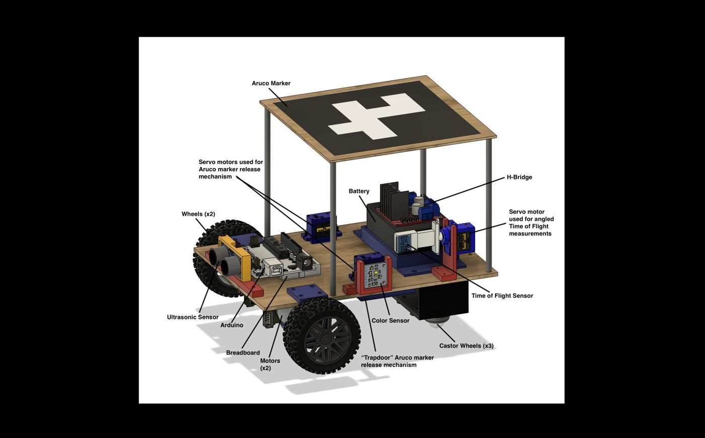

ENES 100 Autonomous Vehicle
Worked in a team of six to design and build an autonomous OTV (Off-road Transport Vehicle) that navigated to a "crash site," identified which face of the anomaly was red, measured its dimensions with a Time-of-Flight sensor, dropped a positioning marker, and piloted itself past three obstacles into the destination zone — earning Most Creative OTV out of six teams.
Click below to see the steps and flip cards →

Chassis & Sensor Housing Design
The chassis was designed in Fusion 360 around two upside-down servo motors, with cutouts sized directly from a GrabCAD model of the motors and cut from ⅛" birch wood on a laser cutter. From there, every sensor and actuator on the vehicle got its own custom-modeled housing — a stand and extended arm for the Time-of-Flight sensor, a housing that let the color sensor sit flush against the anomaly's face, a mount for the battery, and mounts for the three rear caster wheels. I focused on the electronics side of this, making sure each housing that wasn't meant to be glued down held its component securely, since anything loose could throw off sensor readings during a run.
Wiring the Electronics
As electronics lead, I wired the components back to the Arduino Mega rather than daisy-chaining them, so each component had its own connection to the board. The battery and H-bridge shared a 12 V power rail, while the sensors, servos, and Wi-Fi module used the lower-voltage supply. We went with a Mega over an Uno for the extra pins — a decision that came back to bite us later.
Motor Control & Pin Assignment
The two drive motors were wired through a dual H-bridge (L298N), which let each wheel spin independently in either direction and allowed the OTV to turn in place. I mapped out and soldered every connection on the Mega: motor speed and direction pins, I²C lines for the color sensor and Time-of-Flight sensor, the Wi-Fi module's TX/RX, and signal lines for three separate servos. A lot of the Mega's extra pins ended up unused — in hindsight, everything would have fit on an Uno.
Mission Logic
The mission ran as a state machine. The OTV drove forward until the color sensor's Y-coordinate stopped changing, indicating that it had gently bumped into the anomaly. It then backed off and checked whether the face was red; if not, it circled to the next face and repeated the process.
Once the red face was found, the Time-of-Flight sensor measured the block's length by tracking the OTV's start and end coordinates as it drove alongside the face. The OTV then rotated the sensor upward in fixed increments using a positional servo until it lost the block. We used the Pythagorean theorem and the known sensor offset to calculate the height.
After transmitting the measurements over Wi-Fi, the OTV dropped its position marker and navigated past three obstacles into the destination zone.
Turning and Alignment Code
Getting the OTV to actually point where the state machine wanted it to point took its own layer of code. I wrote alignment routines that nudged the vehicle toward a target heading in small increments, checked the vision system's angle reading after each adjustment, and corrected for overshoot when it turned too far. This was necessary because the two drive motors didn't spin at identical speeds even at equal power — a hardware inconsistency that made one-shot turning unreliable.
Propulsion Calculations
Before choosing a motor, we calculated the torque needed for two scenarios: climbing over the course's log obstacle and driving around it. Climbing would have required 0.264 N·m per wheel at a 45° incline, which was well above what our motors could deliver. We therefore routed under the limbo bar instead, which required about 0.149 N·m per wheel at our target speed of 0.08 m/s.
Manufacturer specifications suggested the motors could run at around 126 rad/s, but the OTV barely moved at that speed on the actual chassis. We kept increasing the speed until we found a value the vehicle could reliably operate at — 314.96 rad/min. At that operating point, the actual motor torque was about one-third of our original calculated requirement, showing the expected tradeoff between torque and speed in a DC motor.
The Night Before MS7
Two nights before our final milestone, the Arduino Mega stopped accepting new code. It still ran whatever program was already flashed to it, but refused to accept new uploads. We'd already gotten the OTV into the destination zone successfully during testing, but had no way to demonstrate it with the actual mission code during grading.
On top of that, an Aruco marker was intermittently dropping out of the vision system's tracking. We spent two weeks treating it as a code issue before realizing the marker itself was faulty. Navigation ended up being the hardest part of the system to make reliable, right up to the deadline.
Most Creative OTV
The award came from how the OTV got past a set of obstacle gaps that were too narrow for a straight run. It drifted at an angle and ended up riding with two wheels on the wall and two on the ground, coasting past the gap before dropping back down and continuing to the finish line.
It was a complete accident — nobody planned it, and nothing in the code or design called for it. We just got lucky with how the navigation error lined up. But it's exactly the kind of thing that got us noticed among the six competing teams.